Correo corporativo
Migramos a Microsoft 365 y organizamos usuarios, buzones por área e historial disponible. Acompañamos a tu equipo en la configuración de sus dispositivos.

AsesoríaModernizamos tu correo corporativo, seguridad, dominio y sitio web para que tu equipo trabaje con una infraestructura más organizada y preparada para crecer.
SOLICITAR ASESORÍAMigración, implementación y administración continua.
Servicios independientes.
Administración coordinada.
Una solución adaptada al tamaño de tu equipo y al estado actual de tus servicios.
Migramos a Microsoft 365 y organizamos usuarios, buzones por área e historial disponible. Acompañamos a tu equipo en la configuración de sus dispositivos.
Configuramos autenticación multifactor y protección del dominio con SPF, DKIM y DMARC para reducir riesgos de acceso no autorizado y suplantación.
Organizamos la administración del dominio y sus registros. Separamos los servicios críticos para reducir el impacto de una falla en un solo proveedor.
Diseñamos una presencia profesional, rápida y adaptable a móviles, con una base técnica preparada para buscadores y para el crecimiento de tu empresa.
Revisamos el consumo de los buzones y ayudamos a organizar archivos y correos para anticipar problemas de capacidad.
Gestionamos altas y bajas, configuración de cuentas, mantenimiento web y seguimiento de los servicios dentro del alcance acordado.
Evaluamos cuentas, almacenamiento, dominio, sitio web y necesidades del equipo.
Definimos el alcance, las licencias necesarias y una ruta de migración con tiempos acordados.
Configuramos los servicios y comprobamos su operación antes de retirar la infraestructura anterior.
Administramos los servicios y atendemos ajustes e incidencias conforme al plan contratado.
Revisamos la titularidad y el acceso al dominio, así como el historial disponible en la plataforma actual, para definir qué se puede migrar y cómo conservarlo.
No necesariamente. El diagnóstico permite identificar qué conviene conservar, reorganizar o sustituir según las necesidades de tu empresa.
Planeamos la transición y las validaciones para reducir afectaciones. Las ventanas de cambio y cualquier posible interrupción se acuerdan antes de implementar.
El sitio web, el licenciamiento y el soporte se definen en la propuesta de cada empresa. El alcance depende de los usuarios, los servicios existentes y las funciones requeridas.
Podemos administrar usuarios, buzones, almacenamiento, dominio y sitio web, además de atender configuraciones y mantenimiento. Los horarios, canales y alcance se establecen en la propuesta.
Cuéntanos cuántas personas integran tu equipo y qué necesitas mejorar. Preparamos una propuesta con el alcance adecuado.
SOLICITAR ASESORÍA